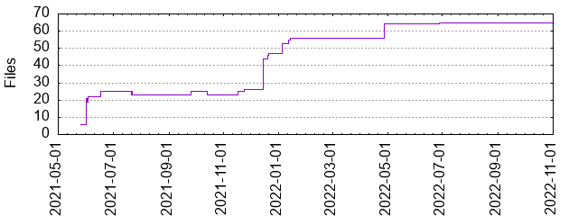

Files
General
Activity
Authors
Files
Lines
Tags
Total files
65
Total lines
3596
Average file size
1874.80 bytes
File count by date

Extensions
Extension
Files (%)
Lines (%)
Lines/file
java
61 (93.85%)
3127 (86.96%)
51
md
1 (1.54%)
33 (0.92%)
33
xml
2 (3.08%)
384 (10.68%)
192
yml
1 (1.54%)
52 (1.45%)
52